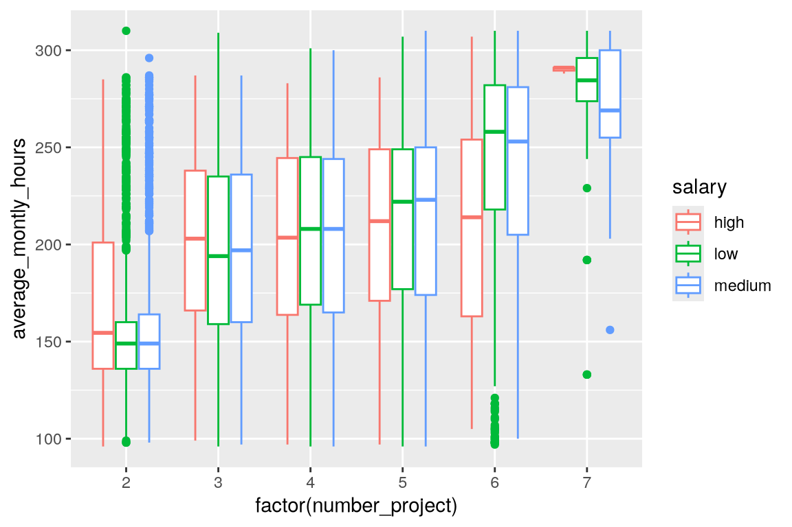

Code
library(ggplot2)
library(readr)
library(hrbrthemes)
library(ggthemes)ggplot themeggplot2 plot’s theme. It considers both the built-in themes in ggplot2 and some ‘extra’ themes available in ggplot2 extensions.
library(ggplot2)
library(readr)
library(hrbrthemes)
library(ggthemes)getwd()[1] "/home/simone/githubRepos/data-viz-smm635/tutorials/design"df <- read_csv("../../data/hrDataset/HR_capstone_dataset.csv")Rows: 14999 Columns: 10
── Column specification ────────────────────────────────────────────────────────
Delimiter: ","
chr (2): Department, salary
dbl (8): satisfaction_level, last_evaluation, number_project, average_montly...
ℹ Use `spec()` to retrieve the full column specification for this data.
ℹ Specify the column types or set `show_col_types = FALSE` to quiet this message.summary(df) satisfaction_level last_evaluation number_project average_montly_hours
Min. :0.0900 Min. :0.3600 Min. :2.000 Min. : 96.0
1st Qu.:0.4400 1st Qu.:0.5600 1st Qu.:3.000 1st Qu.:156.0
Median :0.6400 Median :0.7200 Median :4.000 Median :200.0
Mean :0.6128 Mean :0.7161 Mean :3.803 Mean :201.1
3rd Qu.:0.8200 3rd Qu.:0.8700 3rd Qu.:5.000 3rd Qu.:245.0
Max. :1.0000 Max. :1.0000 Max. :7.000 Max. :310.0
time_spend_company Work_accident left promotion_last_5years
Min. : 2.000 Min. :0.0000 Min. :0.0000 Min. :0.00000
1st Qu.: 3.000 1st Qu.:0.0000 1st Qu.:0.0000 1st Qu.:0.00000
Median : 3.000 Median :0.0000 Median :0.0000 Median :0.00000
Mean : 3.498 Mean :0.1446 Mean :0.2381 Mean :0.02127
3rd Qu.: 4.000 3rd Qu.:0.0000 3rd Qu.:0.0000 3rd Qu.:0.00000
Max. :10.000 Max. :1.0000 Max. :1.0000 Max. :1.00000
Department salary
Length:14999 Length:14999
Class :character Class :character
Mode :character Mode :character
number_project vs average_montly_hoursp <- ggplot(data = df, mapping = aes(x = factor(number_project), y = average_montly_hours, colour = salary))
p + geom_boxplot()
ggplot2 alternativesggplot2 provides the following set of alternative themes:
ggplot2 themes can be applied ad hoc, like in Figure 1, or using the theme_set() function, which changes the default theme.
p + geom_boxplot() + theme_minimal()
Experiment with ggplot2 themes to discover the theme that you want to pass to theme_test().
ggthemes alternativesThe ggplot2 community has also created some popoular extensions providing ‘extra’ themes. ggthemes is one of these extensions. This time we change the default theme to theme_economist(). As Figure 2 shows, the colors of the visual forms have not changed though (they are ggplot2’s default). To adopt a theme and its colors, we have to pass a further option, as per Figure 3
theme_set(theme_economist())
p + geom_boxplot()ggthemes’ theme_economist()
p + geom_boxplot() + scale_color_economist()ggthemes’ theme_economist()
hrbrthemes alternativeshrbrthemes is yet another extension offering extra themes for ggplot2. A distinctive feature of this extension is the selection of fonts associatied with the various themes. For example, the theme theme_ipsum comes with seven alternative fonts.
theme_set(theme_ipsum())
p + geom_boxplot()hrbrthemes’s theme_ipsum()
theme_set(theme_ipsum_rc())
p + geom_boxplot()hrbrthemes’s theme_ipsum_rc()
hrbrthemes offers ‘dark’ themes too (see Figure 6)
theme_set(theme_ft_rc())
p + geom_boxplot() + scale_color_ft()brbrthemes’s theme_ft_rc